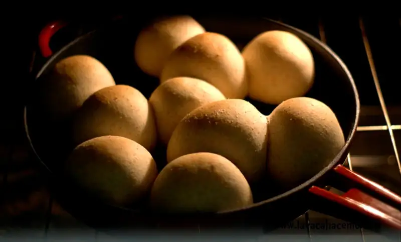
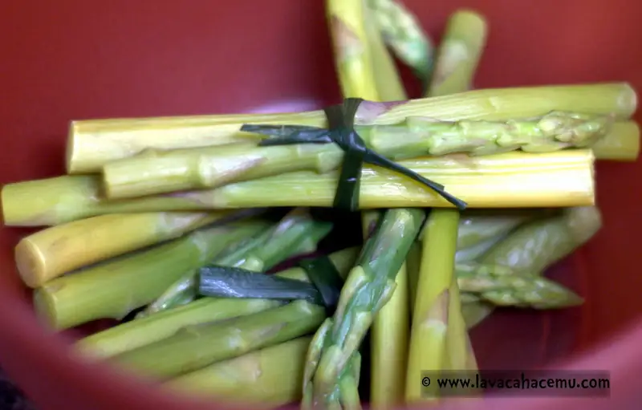
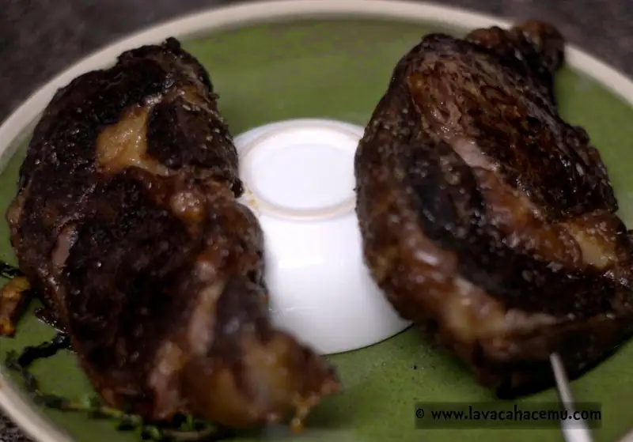
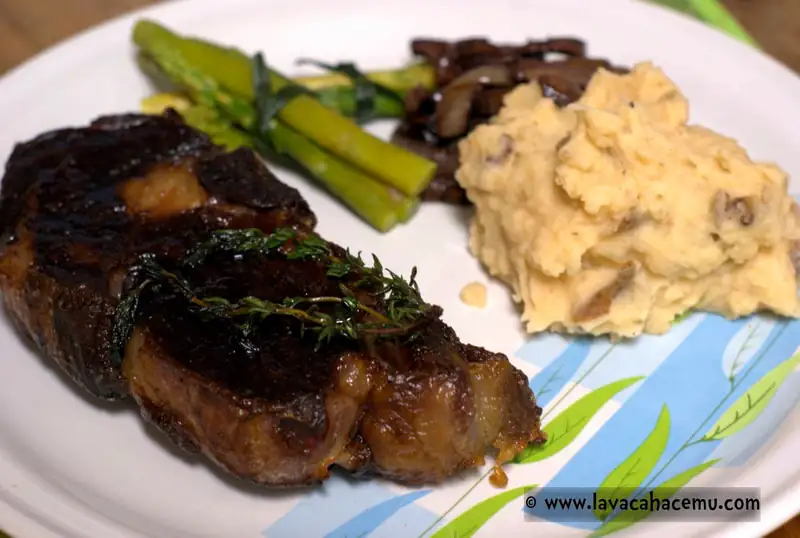
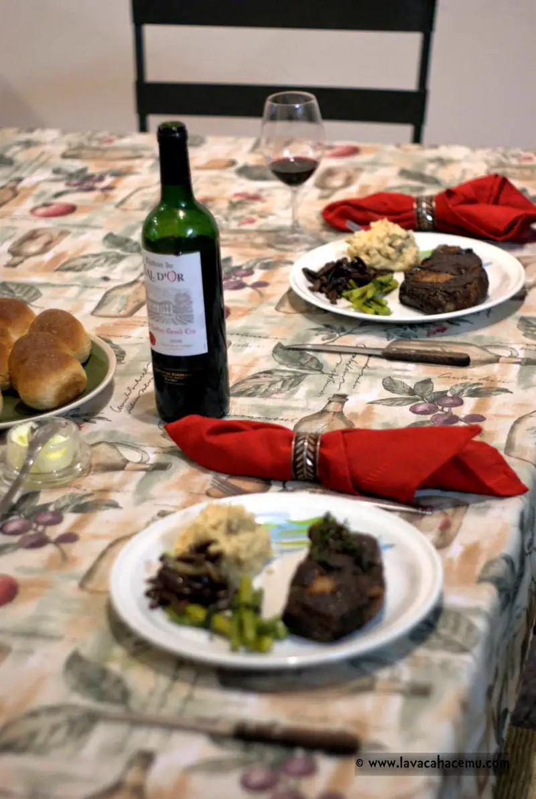
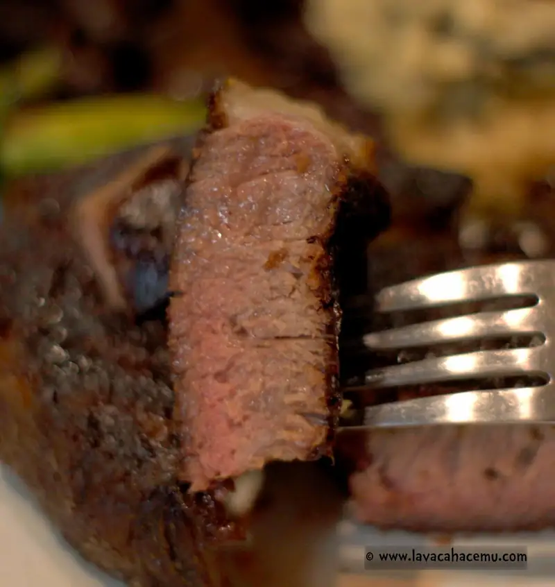
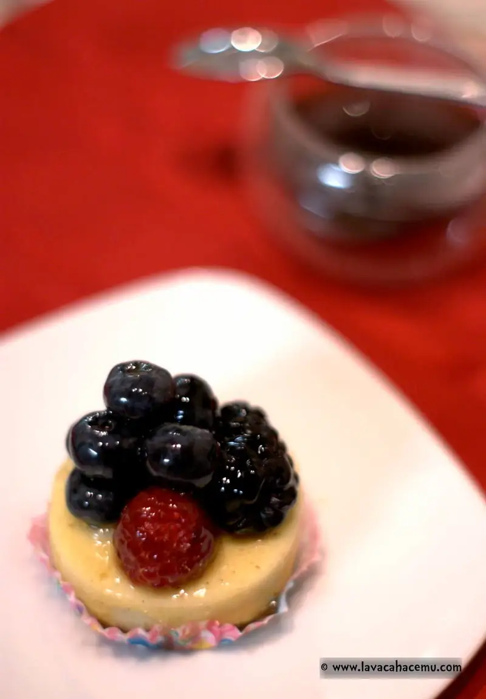
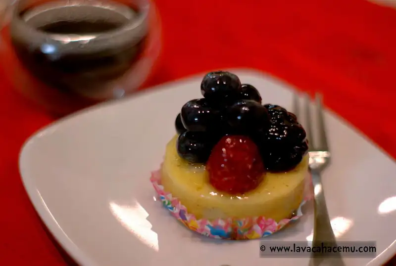

Cena para ocasión especial
Navidad es una ocasión especial: verdad absoluta. Pero también es una ocasión arraigada en tradiciones culinarias que por ningún puto motivo se te ocurra desviarte del pavo horneado en bolsa para hornear. Lo digo por experiencia, un guajolote marinado en achiote y te quitan el privilegio de hacer la cena navideña por... pues, al menos 10 años y contando.
{kind=link}
No, ni se te ocurra cambiar el orden de las cosas en Navidad o en alguna otra de las noches tradicionales. Digo, les puedes aventar una entrada diferente o una salsa diferente de vez en cuando. Sin embargo, en otras ocasiones especiales, pero no tan tradicionales se nos da licencia de experimentar: ribeye añejado/seco con espárragos, puré y hongos.
La carne. Así es como se vería cuando llegó del mercado. Buena distribución de grasa y con mucho tejido conectivo. A éstos trozos se les embarró con ajo (por sus propiedades antibacteriales y pues, por el sabor) y se les colocó en el refrigerador soportados con un par del brochetas para que quedaran separados de su charola.

Después de una semana se secaron, pero nada de hongos o podredumbre. Leí por ahí en internet que para piezas pequeñas/individuales de carne no hay beneficio para añejar y que además se pueden impartir sabores y olores desagradables del refrigerador. Ok, si hay algo en este trozo de carne que va a absorber olores va a ser la grasa, especialmente la mas cercana a la superficie así que le corté 1~3mm de los depósitos de grasa de cada trozo.

El vino. Todo buen trozo de carne merece un vino decente y a pesar de que usualmente uso la técnica de Kimmi Raikkonen para elegir vinos, en esta ocasión pedí consejo del señor vende-vinos y la verdad, un San Emilion Grand Cru del 2010 a precio razonable no estuvo nada mal. Aunque a decir verdad, iba a elegir un pinot noir del valle del río ruso (Russian River Valley) de Sonoma.

Los carbohidratos. Si eres carnívoro, más te vale que no te pierdas de estos carbohidratos suaves y esponjados. La receta de fleishmann's tuvo éxito.

{kind=link}
Aquí está la carne en el spa en su sesión de aceite de masaje (de girasol, aunque cualquier aceite de alto calor sirve) acompañado de su exfoliante de sal kosher.

Que no dije que la receta de fleshmann's tuvo éxito?

Las verduras. Representando el equipo verde en este platillo tenemos a los espárragos amarrados con rabos de poro, aunque los de cebollínes también sirven. Muchas mentadas de madre surgieron al amarrar esos lazos.... muchas.
{kind=link}

{kind=link}
La esponja. Después de sellar los trozos y pasarlos al horno, siguieron unas rebanadas de cebolla para que absorbieran el calor residual del sartén, seguidas de hongos, tomillo y ajo, una vez que estaban dorados, un poco de vino tinto para deglasar se dejó en la temperatura mas baja de la estufa para reducirse.

Más spa después del horno: un bien merecido descanso después de la sellada y horneada donde se calentaron hasta los 160°F pero la inercia del sistema llevó la temperatura hasta 172°F.

{kind=link}
Emplata'o y listo para servir

{kind=link}
Y... servido! Hasta sacamos las servilletas "nais" y todo :P

{kind=link}
Los de /r/steak le llaman "the money shot" a esta toma y malamente, un poco pasado de cocción para mi gusto, pero no completamente cocido que sigue estando bien.

{kind=link}
El postre fue comprado: pastel de queso con frutos rojos y glaseado de vainilla. Sírvase con café fuerte.

{kind=link}
En retrospectiva, hubiera sido una toma más food-porn si le hubiera quitado los calzones :P

{kind=link}
Como conclusiones puedo decir que esto de añejar/secar en casa está muy bien!, queda una capa de carne seca frita envolviendo la carne jugosa del centro.